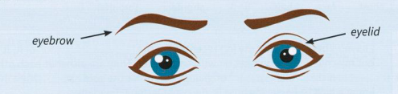

Eyes
The eyes are the basis of a large number of idioms. Note the idioms and their meanings in these paragraphs.

I couldn't believe my eyes1 when I first saw her. She was so beautiful, I just couldn't keep my eyes off2 her. I tried to catch her eye3 to say hello.
Mia and I were good friends at first, but now we don't see eye to eye7. I know the fact that we stopped being friends raised a few eyebrows8 at the time.
It all happened in the blink of an eye12 and no one could do anything to prevent it. It was horrible. But the police officer standing nearby didn't bat an eyelid13. Then something caught my eye14 which shocked me even more.
As a teacher myself, I know that teaching is not easy. You always have to keep an eye on4 the students, but sometimes you just have to turn a blind eye5 if they behave badly. If you want to be a teacher, you have to go into the profession with your eyes open6.
Could you run/cast your eye over9 this report and see if there are any spelling mistakes? My computer's on the blink10 and the spell-checker refuses to work. These reports are important, and I always have to have/keep one eye on11 how the boss will react to them if they look untidy.
Working in such a poor country opened my eyes to15 how unjust the world is. It was indeed a real eye-opener16.